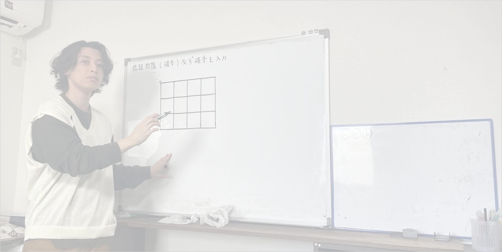

大事なのは
"教え合いによる学びの深さ"
本気で国立・難関私立を目指す生徒のための学習空間
当塾について
こかど塾は講師が教えるだけでなく、
生徒同士で教え合うことの相互学習に重きを置いています。
授業と自習のサイクルだけでは知識を詰め込むだけになりがちです。
そこで対話型学習を加えることで知識を使い、
教えることを学びとし、真の理解ができることを目指しています。
当塾では、大学受験合格を第一とし、
所属高校に関わらず本気で国立、難関私立を目指して授業をしています。
今の学校の成績は関係ありません！

講師紹介

古角 優介
経歴
- 日生学園高等学校(現:桜丘高等学校)
- 関西学院大学商学部
大学在学中に塾講師を始める。
2023年4月に古角塾を設立する。
「受験の常識を変えたい」をモットーに日々精進しています。
なぜ古角塾が選ばれるのか
相互学習
生徒同士の教え合いを重視し、教えることで学ぶという深い理解を促進します。
少人数制
一人ひとりの学習進度に合わせたきめ細かい指導で、確実な学力向上を実現します。
目標設定
国公立大学・難関私立大学合格を見据えた高い目標設定と戦略的な学習計画を提供します。
将来を見据えた
確かな力を
中学部では、英語と数学の授業を少人数制クラスで行います。また、高校部と連携する事で、公立高校受験だけでなく、その先の大学受験までを見据えた、中高一貫教育を提供しています。
学習の本質を捉え
難関大学へ
高校部では、英語と数学の授業を少人数制クラスで行います。難関大学を目指す生徒を対象に授業をしています。
授業について
中学部
中学2年生コース
基礎から応用まで体系的に学習し、学校の定期テスト対策と高校受験の土台作りを両立します。英語と数学を重点的に指導し、確かな学力を身につけます。
授業料
90分授業/回 × 週2回 ⇒ 11,000円/月額
中学3年生コース(I)
高校受験に向けた基礎力完成を目指すコースです。学校の内容と受験対策を効率よく両立し、志望校合格に必要な知識と解法を習得します。
授業料
90分授業/回 × 週2回 ⇒ 11,000円/月額
中学3年生コース(II)
難関高校受験を目指す生徒向けの発展コースです。応用問題や入試過去問にも取り組み、高度な思考力と解法テクニックを習得します。
授業料
90分授業/回 × 週2回 ⇒ 11,000円/月額
高校部
高校1年コース
大学受験を見据えた先取り学習を行います。高校1年生のうちから効率的に基礎を固め、難関大学受験に必要な思考力の土台を作ります。
授業料
90分授業/回 × 週2回 ⇒ 50,000円/月額
国公立コース
国公立大学の受験に必要な教科を重点的に学習します。二次試験対策も含め、難関国公立大学合格に必要な思考力と解答力を養成します。
授業料
90分授業/回 × 週2回 ⇒ 50,000円/月額
関関同立コース
関西の難関私立大学合格を目指すコースです。各大学の入試傾向を分析し、効率的な学習計画で合格に必要な力を身につけます。
授業料
90分授業/回 × 週2回 ⇒ 50,000円/月額
授業配分について(1週間の例)
- 高1生 ⇒ 英語1回 , 数学2回
- 高2生 ⇒ 時期により変動
- 高3生 ⇒ 時期により変動
※授業配分の狙いとして、高1の段階で数学の授業を多めに行う事で先取り学習を、
英語は英単語等の基礎学習の為、授業を少なく設定しています
講習
夏期講習・冬期講習(中学部のみ)
90分授業/回 × 8回 ⇒ 11,000円
※上記以外に、補習や受験対策講座を設けています。
講習と案内している授業以外につきましては、
受講の費用は掛かりませんので記載をしておりません。
※高校部につきましては、学習進捗状況を基に決定する為、記載しておりません。
進学実績
こかど塾では多くの生徒が志望校に合格しています。
以下は過去の主な合格実績です。
国公立大学
- 大阪大学
- 神戸大学
- 大阪公立大学
- 兵庫県立大学
私立大学
- 関西学院大学
- 関西大学
- 同志社大学
- 立命館大学
- 近畿大学
アクセス
こかど塾
〒665-0061
兵庫県宝塚市仁川北２丁目１２−２９
最寄り駅：阪急仁川駅から徒歩5分
TEL: 06-XXXX-XXXX
| 営業時間 | 平日 14:00〜22:00 土曜 13:00〜20:00 |
|---|---|
| 定休日 | 日曜・祝日 |
お問い合わせ
随時、生徒を募集しています。まずは面談や体験授業からお気軽にご連絡ください。
お電話でのお問い合わせ
06-XXXX-XXXX
（平日14:00〜22:00、土曜13:00〜20:00）
メールでのお問い合わせ
info@kokado-juku.com